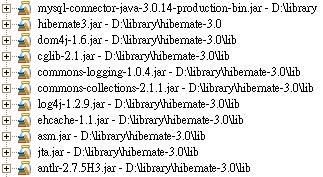

Hibernate是ORM的解决方案，其底层对数据库的操作依赖于JDBC，所以您必须先取得JDBC驱动程序，在这边所使用的是MySQL，所以您必须至 MySQL® Connector/J 取得MySQL的JDBC驱动程序。
接下来至 Hibernate 官方网站 取得hibernate 3.0。
解开zip档案后，当中的hibernate3.jar是必要的，而在lib目录中还包括了许多jar档案，您可以在 Hibernate 3.0官方的参考手册 上找到这些jar的相关说明，其中必要的是
antlr、dom4j、CGLIB、asm、Commons Collections、Commons Logging、
EHCache，Hibernate底层还需要Java Transaction API，所以您还需要jta.jar，到这边为止，总共需要以下的jar档案：

Hibernate可以运行于单机之上，也可以运行于Web应用程序之中，如果是运行于单机，则将所有用到的jar档案（包括JDBC驱动程序）设定至CLASSPATH中，如果是运行于Web应用程序中，则将jar档案置放于WEB-INF/lib中。
如果您还需要额外的Library，再依需求加入，例如JUnit、Proxool等等，接下来可以将etc目录下的log4j.properties复
制至Hibernate项目的Classpath下，并修改一下当中的log4j.logger.org.hibernate为error，也就是只在在
错误发生时显示必要的讯息。
接着设置基本的Hibernate配置文件，可以使用XML或Properties档案，这边先使用XML，档名预设为hibernate.cfg.xml：
<?xml version="1.0" encoding="utf-8"?>配置文件中已经加上批注为每一个项目作了说明，其中对象与数据库表格映像文件还有待加入。
<!DOCTYPE hibernate-configuration PUBLIC
"-//Hibernate/Hibernate Configuration DTD 3.0//EN"
"http://hibernate.sourceforge.net/hibernate-configuration-3.0.dtd">
<hibernate-configuration>
<session-factory>
<!-- 显示实际操作数据库时的SQL -->
<property name="show_sql">true</property>
<!-- SQL方言，这边设定的是MySQL -->
<property name="dialect">org.hibernate.dialect.MySQLDialect</property>
<!-- JDBC驱动程序 -->
<property name="connection.driver_class">com.mysql.jdbc.Driver</property>
<!-- JDBC URL -->
<property name="connection.url">jdbc:mysql://localhost/demo</property>
<!-- 数据库使用者 -->
<property name="connection.username">caterpillar</property>
<!-- 数据库密码 -->
<property name="connection.password">123456</property>
<!-- 以下设置对象与数据库表格映像文件 -->
</session-factory>
</hibernate-configuration>